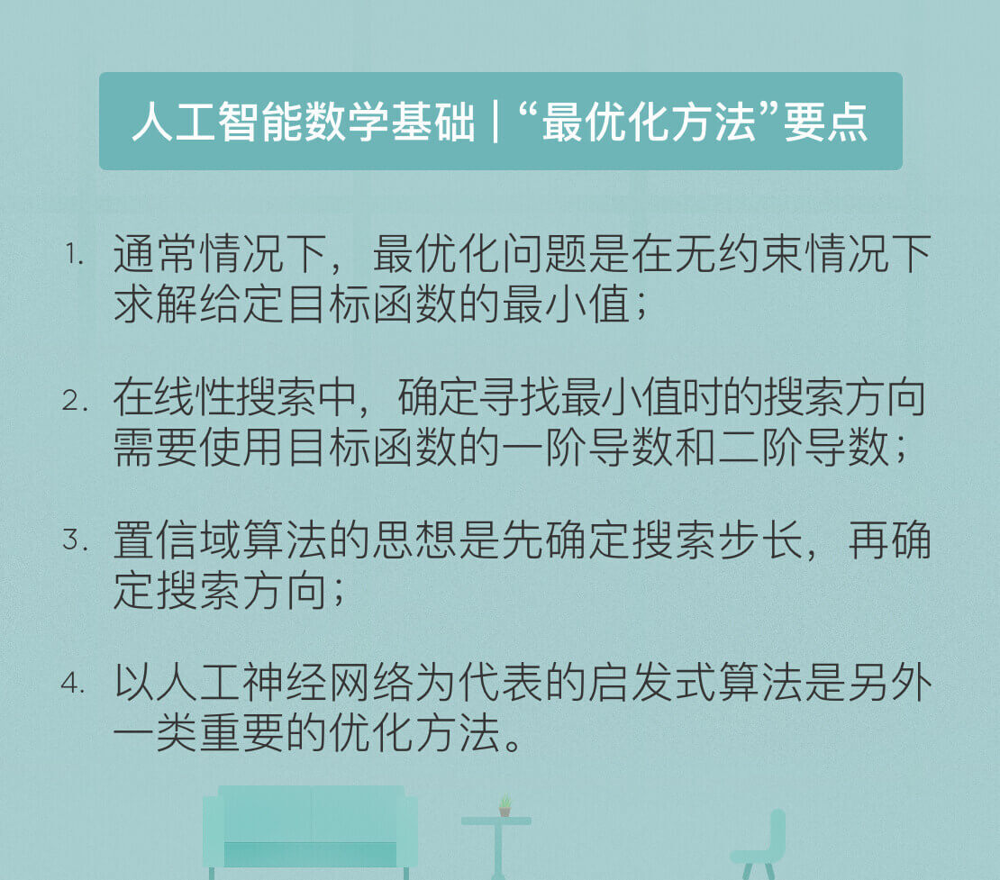

- 00 开篇词 人工智能：新时代的必修课.md.html
- 01 数学基础 九层之台，起于累土：线性代数.md.html
- 02 数学基础 月有阴晴圆缺，此事古难全：概率论.md.html
- 03 数学基础 窥一斑而知全豹：数理统计.md.html
- 04 数学基础 不畏浮云遮望眼：最优化方法.md.html
- 05 数学基础 万物皆数，信息亦然：信息论.md.html
- 06 数学基础 明日黄花迹难寻：形式逻辑.md.html
- 07 机器学习 数山有路，学海无涯：机器学习概论.md.html
- 08 机器学习 简约而不简单：线性回归.md.html
- 09 机器学习 大道至简：朴素贝叶斯方法.md.html
- 10 机器学习 衍化至繁：逻辑回归.md.html
- 11 机器学习 步步为营，有章可循：决策树.md.html
- 12 机器学习 穷则变，变则通：支持向量机.md.html
- 13 机器学习 三个臭皮匠，赛过诸葛亮：集成学习.md.html
- 14 机器学习 物以类聚，人以群分：聚类分析.md.html
- 15 机器学习 好钢用在刀刃上：降维学习.md.html
- 16 人工神经网络 道法自然，久藏玄冥：神经网络的生理学背景.md.html
- 17 人工神经网络 一个青年才俊的意外死亡：神经元与感知器.md.html
- 18 人工神经网络 左手信号，右手误差：多层感知器.md.html
- 19 人工神经网络 各人自扫门前雪：径向基函数神经网络.md.html
- 20 人工神经网络 看不见的手：自组织特征映射.md.html
- 21 人工神经网络 水无至清，人莫至察：模糊神经网络.md.html
- 22 深度学习 空山鸣响，静水流深：深度学习概述.md.html
- 23 深度学习 前方有路，未来可期：深度前馈网络.md.html
- 24 深度学习 小树不修不直溜：深度学习中的正则化.md.html
- 25 深度学习 玉不琢不成器：深度学习中的优化.md.html
- 26 深度学习 空竹里的秘密：自编码器.md.html
- 27 深度学习 困知勉行者勇：深度强化学习.md.html
- 28 深度学习框架下的神经网络 枯木逢春：深度信念网络.md.html
- 29 深度学习框架下的神经网络 见微知著：卷积神经网络.md.html
- 30 深度学习框架下的神经网络 昨日重现：循环神经网络.md.html
- 31 深度学习框架下的神经网络 左右互搏：生成式对抗网络.md.html
- 32 深度学习框架下的神经网络 三重门：长短期记忆网络.md.html
- 33 深度学习之外的人工智能 一图胜千言：概率图模型.md.html
- 34 深度学习之外的人工智能 乌合之众的逆袭：集群智能.md.html
- 35 深度学习之外的人工智能 授人以鱼不如授人以渔：迁移学习.md.html
- 36 深度学习之外的人工智能 滴水藏海：知识图谱.md.html
- 37 应用场景 你是我的眼：计算机视觉.md.html
- 38 应用场景 嘿, Siri：语音处理.md.html
- 39 应用场景 心有灵犀一点通：对话系统.md.html
- 40 应用场景 数字巴别塔：机器翻译.md.html
- 一键到达 人工神经网络复习课.md.html
- 一键到达 应用场景复习课.md.html
- 一键到达 数学基础复习课.md.html
- 一键到达 机器学习复习课.md.html
- 一键到达 深度学习之外的人工智能复习课.md.html
- 一键到达 深度学习复习课.md.html
- 一键到达 深度学习框架下的神经网络复习课.md.html
- 推荐阅读 我与人工智能的故事.md.html
- 新书 《裂变：秒懂人工智能的基础课》.md.html
- 直播回顾 机器学习必备的数学基础.md.html
- 第2季回归 这次我们来聊聊机器学习.md.html
- 结课 溯洄从之，道阻且长.md.html
- 课外谈 “人工智能基础课”之二三闲话.md.html
- （课外辅导）人工神经网络 拓展阅读参考书.md.html
- （课外辅导）数学基础 拓展阅读参考书.md.html
- （课外辅导）机器学习 拓展阅读参考书.md.html
- （课外辅导）深度学习 拓展阅读参考书.md.html
- 捐赠
04 数学基础 不畏浮云遮望眼：最优化方法
从本质上讲，人工智能的目标就是最优化：在复杂环境与多体交互中做出最优决策。几乎所有的人工智能问题最后都会归结为一个优化问题的求解，因而最优化理论同样是人工智能必备的基础知识。
最优化理论（optimization）研究的问题是判定给定目标函数的最大值（最小值）是否存在，并找到令目标函数取到最大值（最小值）的数值。如果把给定的目标函数看成连绵的山脉，最优化的过程就是判断顶峰的位置并找到到达顶峰路径的过程。
要实现最小化或最大化的函数被称为目标函数（objective function）或评价函数，大多数最优化问题都可以通过使目标函数\(f(x)\)最小化解决，最大化问题则可以通过最小化\(-f(x)\)实现。
实际的最优化算法既可能找到目标函数的全局最小值（global minimum），也可能找到局部极小值（local minimum），两者的区别在于全局最小值比定义域内所有其他点的函数值都小；而局部极小值只是比所有邻近点的函数值都小。
理想情况下，最优化算法的目标是找到全局最小值。但找到全局最优解意味着在全局范围内执行搜索。还是以山峰做例子。全局最小值对应着山脉中最高的顶峰，找到这个顶峰最好的办法是站在更高的位置上，将所有的山峰尽收眼底，再在其中找到最高的一座。
可遗憾的是，目前实用的最优化算法都不具备这样的上帝视角。它们都是站在山脚下，一步一个脚印地寻找着附近的高峰。但受视野的限制，找到的峰值很可能只是方圆十里之内的顶峰，也就是局部极小值。
当目标函数的输入参数较多、解空间较大时，绝大多数实用算法都不能满足全局搜索对计算复杂度的要求，因而只能求出局部极小值。但在人工智能和深度学习的应用场景下，只要目标函数的取值足够小，就可以把这个值当作全局最小值使用，作为对性能和复杂度的折中。
根据约束条件的不同，最优化问题可以分为无约束优化（unconstrained optimization）和约束优化（constrained optimization）两类。无约束优化对自变量\(x\)的取值没有限制，约束优化则把\(x\)的取值限制在特定的集合内，也就是满足一定的约束条件。
线性规划（linear programming）就是一类典型的约束优化，其解决的问题通常是在有限的成本约束下取得最大的收益。约束优化问题通常比无约束优化问题更加复杂，但通过拉格朗日乘子（Lagrange multiplier）的引入可以将含有\(n\)个变量和\(k\)个约束条件的问题转化为含有\((n + k)\)个变量的无约束优化问题。拉格朗日函数最简单的形式如下
\[ L(x, y, \\lambda) = f(x, y) + \\lambda \\varphi(x, y) \]
式中\(f(x, y)\)为目标函数，\(\\varphi(x, y)\)则为等式约束条件，\(\\lambda\)是拉格朗日乘数。从数学意义上讲，由原目标函数和约束条件共同构成的拉格朗日函数与原目标函数具有共同的最优点集和共同的最优目标函数值，从而保证了最优解的不变性。
求解无约束优化问题最常用的方法是梯度下降法（gradient descent）。直观地说，梯度下降法就是沿着目标函数值下降最快的方向寻找最小值，就像爬山时要沿着坡度最陡的路径寻找山顶一样。在数学上，梯度的方向是目标函数导数（derivative）的反方向。
当函数的输入为向量时，目标函数的图象就变成了高维空间上的曲面，这时的梯度就是垂直于曲面等高线并指向高度增加方向的向量，也就携带了高维空间中关于方向的信息。而要让目标函数以最快的速度下降，就需要让自变量在负梯度的方向上移动。这个结论翻译成数学语言就是“多元函数沿其负梯度方向下降最快”，这也是梯度下降法的理论依据。
在梯度下降算法中，另一个重要的影响因素是步长，也就是每次更新\(f(\\mathbf{x})\)时\(\\mathbf{x}\)的变化值。较小的步长会导致收敛过程较慢，当\(f(\\mathbf{x})\)接近最小值点时，步长太大反而会导致一步迈过最小值点，正所谓“过犹不及”。
因而在梯度下降法中，步长选择的整体规律是逐渐变小的。这样的方式也符合我们的认识规律。在校对仪器时，不都是先粗调再微调么？
以上是针对单个样本的梯度下降法，当可用的训练样本有多个时，样本的使用模式就分为两种。
一种是批处理模式（batch processing），即计算出在每个样本上目标函数的梯度，再将不同样本的梯度进行求和，求和的结果作为本次更新中目标函数的梯度。在批处理模式中，每次更新都要遍历训练集中所有的样本，因而运算量较大。
另一种模式叫做随机梯度下降法（stochastic gradient descent），它在每次更新中只使用一个样本，下一次更新再使用另外一个样本，在不断迭代的更新过程中实现对所有样本的遍历。有趣的是，事实表明当训练集的规模较大时，随机梯度下降法的性能更佳。
梯度下降法只用到了目标函数的一阶导数（first-order derivative），并没有使用二阶导数（second-order derivative）。一阶导数描述的是目标函数如何随输入的变化而变化，二阶导数描述的则是一阶导数如何随输入的变化而变化，提供了关于目标函数曲率（curvature）的信息。曲率影响的是目标函数的下降速度。当曲率为正时，目标函数会比梯度下降法的预期下降得更慢；反之，当曲率为负时，目标函数则会比梯度下降法的预期下降得更快。
梯度下降法不能利用二阶导数包含的曲率信息，只能利用目标函数的局部性质，因而难免盲目的搜索中。已知目标函数可能在多个方向上都具有增加的导数，意味着下降的梯度具有多种选择。但不同选择的效果显然有好有坏。
遗憾的是，梯度下降法无法获知关于导数的变化信息，也就不知道应该探索导数长期为负的方向。由于不具备观察目标函数的全局视角，在使用中梯度下降法就会走出一些弯路，导致收敛速度变慢。而二阶导数所包含的全局信息能够为梯度下降的方向提供指导，进而获得更优的收敛性。
如果将二阶导数引入优化过程，得到的典型方法就是牛顿法（Newton’s method）。在牛顿法中，目标函数首先被泰勒展开，写成二阶近似的形式（相比之下，梯度下降法只保留了目标函数的一阶近似）。此时再对二阶近似后的目标函数求导，并令其导数等于0，得到的向量表示的就是下降最快的方向。相比于梯度下降法，牛顿法的收敛速度更快。
不管是利用一阶导数的梯度下降法，还是利用二阶导数的牛顿法，其寻找最小值点的基本思想都是先确定方向，再确定步长，因而统称为“线性搜索方法”（line search）。
还有一类算法，其寻找最小值点的基本思路是先确定步长，以步长为参数划定一个区域，再在这个区域内寻找最快下降的方向。这类算法被称为“置信域方法”（trust region）。
具体来说，置信域算法的运行过程如下：设定一个置信域半径\(s\)，并在以当前点为中心、以\(s\)为半径的封闭球形区域作为置信域，在置信域内寻找目标函数的二次近似模型的最优点，最优点和当前点之间的距离就是计算出来的备选位移。
在备选位移上，如果目标函数的二次近似产生了充分的下降，就将当前点移动到计算出的最优点，则继续按此规则迭代计算下去，并可以适当增加\(s\)；如果目标函数的近似下降不够理想，则说明步子跨得太大，需要缩小\(s\)并计算出新的备选位移，直到满足终止条件。
除了以上算法外，还有一类被称为“启发式算法”（heuristics）的最优化方法。启发式算法的灵感来源于20世纪50年代诞生的仿生学，它将生物进化等自然现象的机理应用于现实世界复杂问题的优化之中，并取得了不俗的效果。
相对于传统的基于数学理论的最优化方法，启发式算法显得返璞归真。启发式算法的核心思想就是大自然中”优胜劣汰”的生存法则，并在算法的实现中添加了选择和突变等经验因素。
事实上，搜索越多并不意味着智能越高，智能高的表现恰恰是能够善用启发式策略，不用经过大量搜索也能解决问题。启发式算法的实例包括模拟生物进化规律的遗传算法（genetic algorithm）、模拟统计物理中固体结晶过程的模拟退火算法（simulated annealing）、模拟低等动物产生集群智能的蚁群算法（ant colony optimization）等等。
今天炙手可热的神经网络实际上也是一类启发式算法，它模拟的则是大脑中神经元竞争和协作的机制。关于各类启发式算法的论著较多，如果你感兴趣，可以查阅不同算法的原理及实现，受篇幅所限，在此不做赘述。
今天我和你分享了人工智能必备的最优化方法基础，着重于抽象概念的解释而非具体的数学公式，其要点如下：
- 通常情况下，最优化问题是在无约束情况下求解给定目标函数的最小值；
- 在线性搜索中，确定寻找最小值时的搜索方向需要使用目标函数的一阶导数和二阶导数；
- 置信域算法的思想是先确定搜索步长，再确定搜索方向；
- 以人工神经网络为代表的启发式算法是另外一类重要的优化方法。
在最优化方法中，基于数学定理的搜索式算法和基于仿生学原理的启发式算法，哪一种能够在人工智能的发展中发挥更大的作用呢？
欢迎发表你的观点。

© 2019 - 2023 Liangliang Lee. Powered by gin and hexo-theme-book.